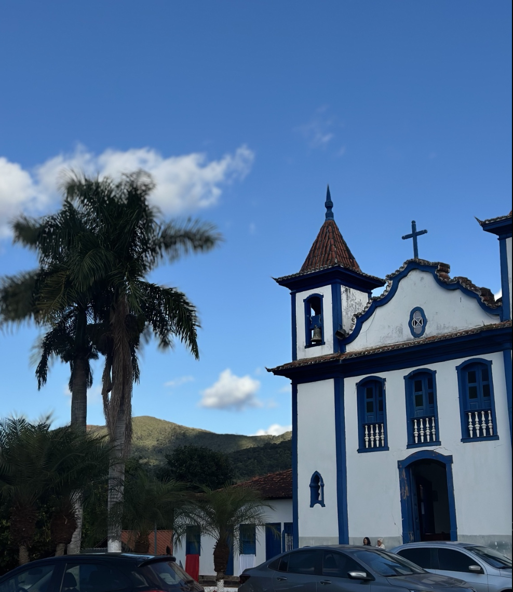

Sabores autênticos de Minas, preparados com cuidado e servidos com acolhimento.
Cocais — Minas Gerais
Nosso cardápio
Pratos mineiros tradicionais, porções generosas e uma carta completa de bebidas para todos os momentos.
Nenhum item encontrado para sua busca.
Funcionamento
Horários sujeitos a alterações em feriados e datas especiais. Em feriados, funcionamos das 14h às 00h.

Patrimônio cultural mineiro
Um dos pontos mais encantadores de Barão de Cocais, preservando a beleza da antiga Vila Colonial, com forte identidade cultural mineira.
Destino ideal para quem busca história, tranquilidade, gastronomia típica e contato com a natureza.
Onde estamos
Praça da Vila Colonial, Cocais
Barão de Cocais — MG